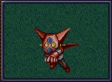
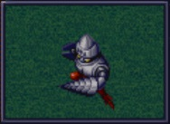
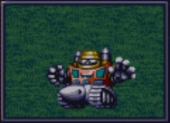
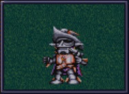
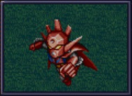
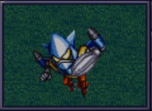

盖塔机器人系列登场机体#
我方机体#
盖塔小队的三个形态的改造段数中除了HP和EN之外都不共享，强化芯片也是独立的。
ゲッター1#

可以用到最终话而且改造也大多继承的强力机体，是重点培养和改造对象。注意不要改造ゲッターレザー，这个武器的改造不继承到真ゲッター。EN改造超过4级也将会是浪费资金。盖塔光线的消耗就威力来说非常小。
盖塔光线消耗EN虽然少但是也和后面增加的武器有点重复，但是不改造盖塔光线会损失一些资金（一些早期Boss会跑掉），除非有什么特别偏好，否则还是改造吧。
对于速通者来说，有射程5的移动后可对空武器也是个优势。缺点是弹数太少。
虽然是超级系，但是装甲脆得跟真实系有得一拼……或者你会换到2号机从地下接近敌人？幸好后面会换机。
ゲッター2#

盖塔三个形态中运动性和移动力最高的。但是也是最脆的，幸好有分身。攻击力也是最差的。仅用于赶路的形态，盖塔1对地乏力，2号机对地更强，但是到了中后期地面的敌人有挑战性的本来就不多，我方还有其他的陆战比空战出色的机体，这个形态也就前期有点用，所以不需要改造。
武器的ドリルパンチ的改造段数不能继承到真ゲッター。
ゲッター3#

大雪山おろし可以很容易的消灭陆地和海中的敌人，但是对空能力太差，游戏后期敌人全员空飞的时候只有挨打。因为海战太少的原因，也不需要改造，用的时候装个装甲就行。在某些特定地图，敌人的机动战士和重战机到我军的路中需要下水，这时候把ゲッター3单独放在水里可以让他们无法使用光线武器，一个个上来送死，是一个速通的小技巧。
テキサスマック#

只在第一话回合以内的路线临时出战一话，并不会加入。真实系的攻击力，超级系的运动性……除了那些死要钱的（盖塔队还没幸运），还是当专职探宝队吧。
ゲッタードラゴン#

盖塔龙有了强力的绝招，从此成长为Boss杀手。仍然很脆弱，所以变形成2号机潜行仍然有用。
因为机师地形适应问题，シャインスパーク对地面敌人比较乏力。
对スピンカッター的修改不会被后续的真・ゲッター1继承。
ゲッターライガー#

虽然盖特狮虎的移动力和GP-03有得一拼，但是无消耗的チェーンアタック威力不容小视。非常适合顺路对付地面的杂鱼。另外ゲッター2的ドリルストーム的改造不被继承到本机，但是会继承到真ゲッター2的ドリルテンペスト上面去。本机新增的狮虎导弹的改造反而不被真ゲッター2继承。
ゲッターポセイドン#
盖特波塞冬的大雪山おろし威力连导弹都不如……另外，对盖特旋风的改造并不会继承到真ゲッター3上。好在陆战还是能用的。
敌方机体#
メカザウルス・バド#
HP 1800 EN 200 运动性 24 装甲 120 限界 140 移动 空6 大小 L 空A陆^海^宇^
マグマ弾 攻击 620 射程 1 命中 +10 暴击 ^10 空A陆A海C宇^
ミサイル 攻击 880 射程 1^5 暴击 ^10 空A陆A海A宇A 残弹 10
和ドローメ的区别是一下打不死。
メカザウルス・サキ#
武器最高只有790还不能对空的肉靶子。
メカザウルス・ゼンII#
跟機械獣ジェノバＭ９差不多，但是射程和攻击力更差。
メカザウルス・ザイ#
虽然很脆但是有不错的近身武器，如果不是移动力太差的话或许有点威胁。
メカザウルス・ズー#
虽然是海战专用机体，但是大招居然不能对海……
ミニフォー#
HP 1000 EN 100 运动性 30 装甲 150 限界 170 移动 空7 大小 S 空A陆^海^宇A
ビームバルカン(B) 攻击 350 射程 1 命中 +15 暴击 ^10 空A陆A海^宇A 残弹 20
ベガトロンビーム砲 攻击 500 射程 1^4 空A陆A海C宇A 残弹 10
武器最高只有500的肉靶子。